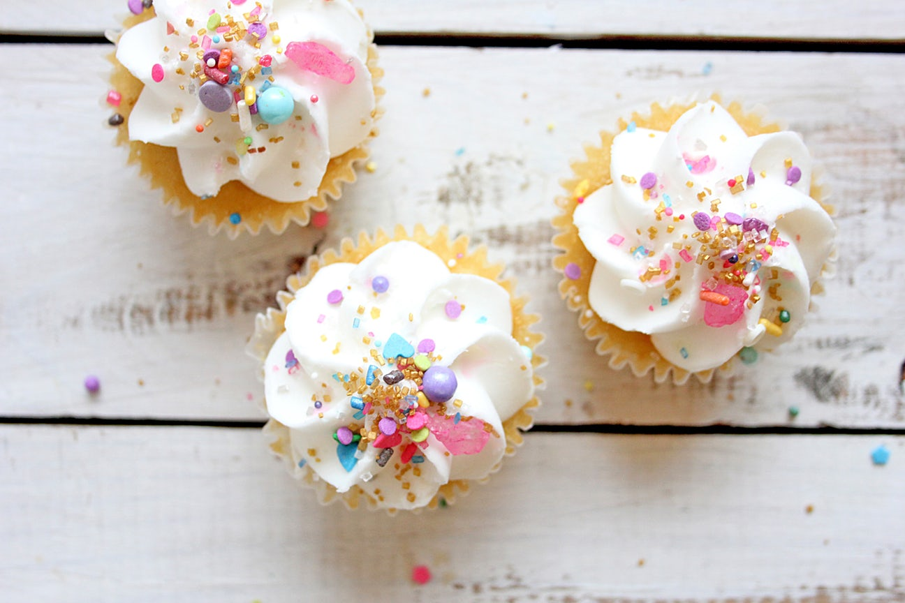
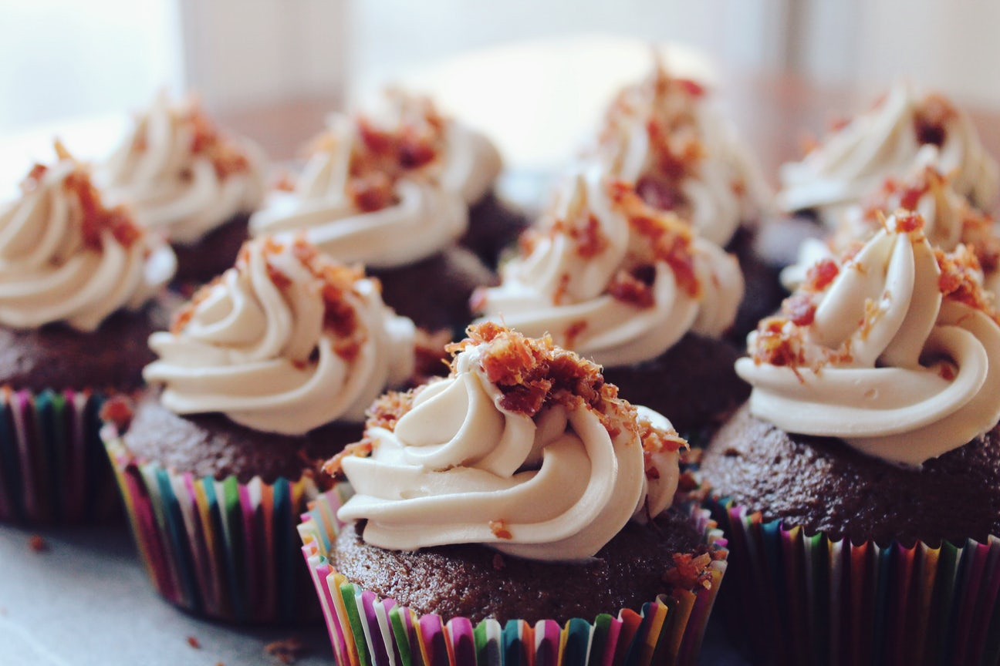
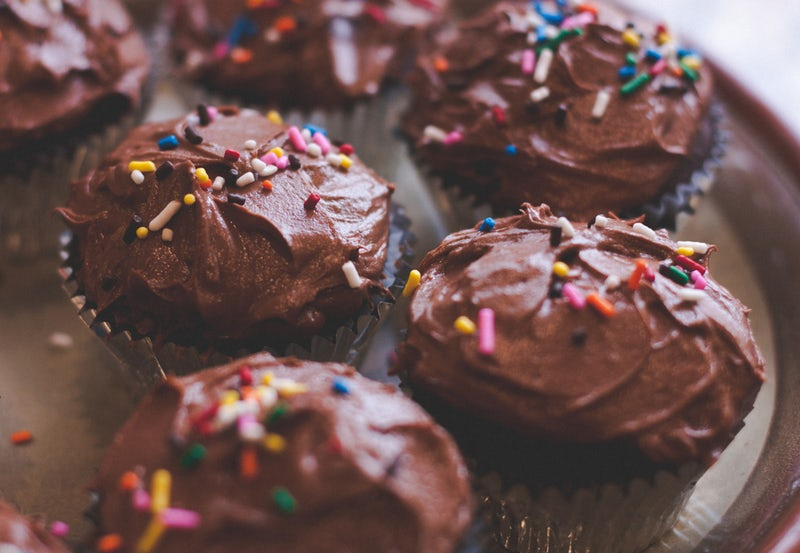

Sunnie's Cupcakes delivers to the Washington DC, New York City, Boston, and Los Angeles metros areas. Delivery fees start at $10, and the minimum order for delivery is one dozen cupcakes. We request that all delivery orders be placed by 5:00pm the day prior to delivery. For large orders, additional advance notice is appreciated. Please select from the menu of flavors available on the day of your requested delivery. For deliveries outside our local delivery area, please contact the location closest to your delivery address and ask to speak with a member of our customer service team. Additional charges may apply.